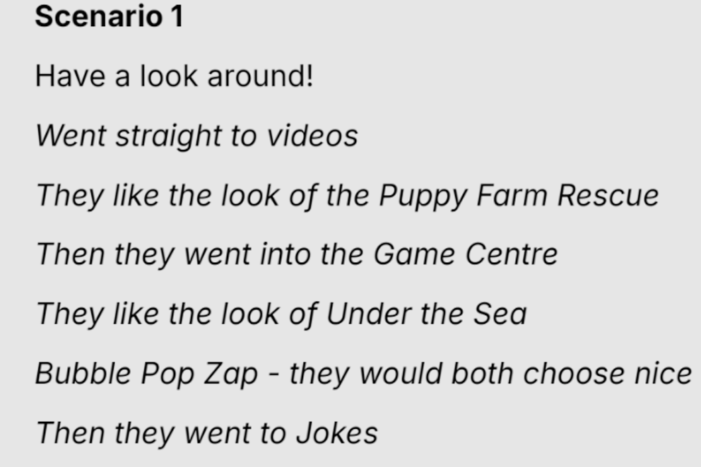

RSPCA NextGen kids site
NextGen is the new youth offering from the RSPCA. I spearheaded the initiative from start to finish.
Leading the project, I designed and conducted workshops, performed in-depth research, and interviewed
kids and parents to gather valuable insights. These efforts culminated in the development and creation
of a website tailored to meet the needs of its young audience and their families, aligning with the
RSPCA's mission, while engaging and educating the next generation about animal welfare.
Check out the new site
Project Overview
I led workshops, conducted research, and interviewed kids and parents to gather insights for the NextGen youth offering.

Research
We conducted a qualitative study to gather insights into the user experience of the new RSPCA Youth Site, with online sessions involving children aged 6 to 12.
Objectives
- Evaluate the user experience among children aged 6 to 12.
- Understand navigation, content interaction, and site perception.
- Identify improvement areas and enhance site appeal and functionality.
Methodology
Pre-Session Questionnaire
Captured initial knowledge, preferences, and online behavior.
Scenario-Based Tasks
Guided through navigation and content exploration tasks, sharing thoughts aloud.
Post-Task Interviews
Delved deeper into experiences, preferences, and challenges encountered.
Key Insights
- Clear categorization and engaging content are essential.
- Emphasis on interactive elements like games and videos.
- Positive feedback on design and navigation.
- Suggestions for clarity in instructions and user-generated content features.
Recommendations
- Continue diversifying content to maintain engagement.
- Introduce more interactive elements like quizzes and polls.
- Promote regular competitions to encourage participation.
- Highlight activities of different RSPCA branches.
- Develop educational content on animal welfare and responsible pet ownership.
- Regularly update with new stories, games, or challenges.
- Establish a feedback loop for continuous improvement.
Website Development
Utilizing Liferay CMS, I built templates and streamlined the website creation process. The site was developed to engage and educate the next generation about animal welfare.